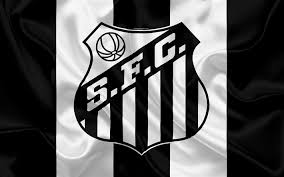

Maiores times de São Paulo

Santos Futebol Clube
Descrição
O time foi fundado em 14 de abril de 1912 e é um dos clubes mais bem-sucedidos do Brasil e reconhecidos mundialmente.
Titulos
- Mundial 2 títulos 1962 e 1963.
- Copa Libertadores da América 3 títulos 1962, 1963 e 2011.
- Campeonato Brasileiro 8 títulos 1961, 1962, 1963, 1964, 1965, 1968, 2002 2004.
Outros times:
São Paulo
Palmeiras